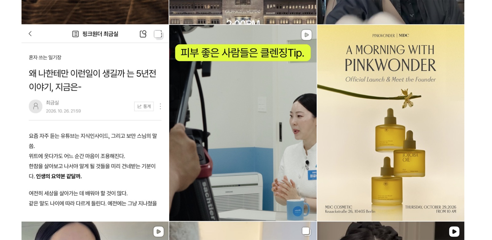
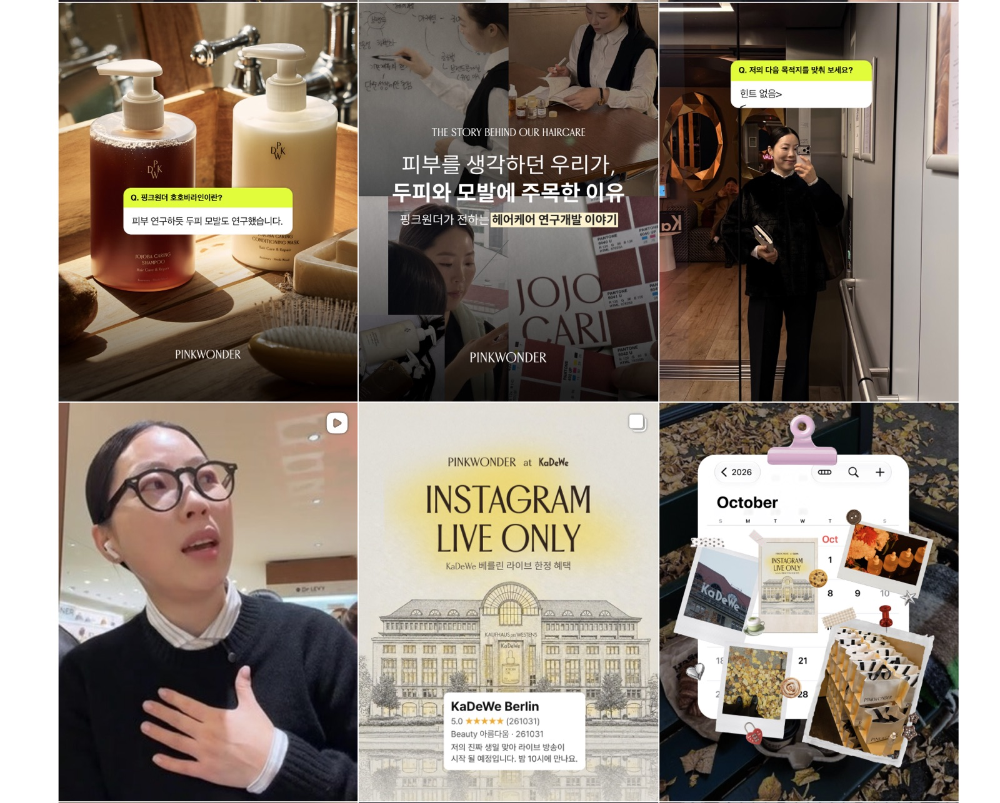

먼저, 누구에게 무엇으로 팔지
포지셔닝 · 타겟 · 소구점
탈모 기능성과 힐란드의 출발점
질문 — 탈모를 앞세우면 힐란드도 흔한 기능성 샴푸처럼 보이지 않을까요?
유정님은 홈쇼핑 뷰티 MD로 일하며 헤어·바디 카테고리를 770억까지 키웠습니다. 수많은 제품이 어떻게 선택받고 다시 구매되는지 본 사람에게 탈모 기능성은 익숙한 판매 언어일 거예요. 의학적 권위와 임상 결과를 전면에 내세우는 브랜드 사이에서 힐란드까지 같은 방식으로 말해야 하는지도 고민이 됩니다.
그렇다고 탈모 기능성을 뒤로 숨기면, 두피와 모발 고민으로 샴푸를 찾는 고객이 힐란드를 알아볼 입구도 좁아집니다. 고객이 알아보는 구매 이유와 브랜드가 그 이유에 답하는 방식은 서로 다른 문제예요. 탈모 기능성은 입구로 두고, 힐란드가 왜 이 샴푸를 만들었는지를 그 뒤에 보여 주는 편이 맞습니다.
같은 숙면을 팔아도 의사가 설계한 매트리스와 「왜 좋은 매트리스는 항상 비싸야 할까?」라는 질문에서 출발한 삼분의일은 다른 브랜드로 기억됩니다. 차이는 숙면이라는 필요 자체보다, 그 필요를 바라본 사람과 질문에 있죠. 힐란드의 자리는 의사나 연구자의 자리가 아닙니다. 많은 샴푸를 써 보고 골라 소개해 온 MD가, 정작 자신이 매일 쓰고 싶은 제품을 만들기로 한 자리입니다.
대표님이 중요하게 여긴 정직함도 추상적인 미덕으로만 두기에는 아깝습니다. 내용물이 보이는 투명한 용기와 가지고 다니기 편한 용량처럼, 제품을 만들며 내린 선택에 그 생각이 남아 있어요. 인스타그램에서는 그 선택의 이유를 들려주고, 상세페이지에서는 고객이 실제로 얻게 되는 사용 경험과 연결해야 합니다. 탈모 효과를 과장하지 않는 것까지 같은 기준에 들어갑니다.
샴푸를 바꾸는 사람
질문 — 워킹맘을 타겟으로 정하면 광고에서 누구에게 말해야 할지도 정해질까요?
신청서에 적어 주신 워킹맘의 샤워실 10분은 힐란드가 주고 싶은 시간을 잘 보여 줍니다. 하지만 같은 워킹맘이라도 샴푸를 바꾸는 이유는 다릅니다. 누군가는 두피가 불편하고, 누군가는 머릿결이 뻣뻣해져서, 또 누군가는 쓰던 제품이 맞지 않아 다시 찾습니다. 광고의 첫 문장을 쓰려면 생활상을 그리는 말보다 제품을 새로 고르게 된 순간이 필요해요.
리뷰에서 그 순간을 직접 적은 사람은 많지 않습니다. 읽은 597건 가운데 이전 제품의 불편을 쓴 리뷰는 18건이었어요. 적은 수를 전체 고객의 모습으로 확대할 필요는 없지만, 처음 말을 걸 문장의 단서로는 충분합니다.
| 샴푸를 바꾸게 된 상황 | 고객 리뷰 원문 |
|---|---|
| 기능성 샴푸의 뻣뻣한 사용감 | 「얇은 모발이고 막 뻣뻣한 탈모샴푸는 싫어하는데 이건 좋아요」 |
| 맞는 샴푸를 찾기 어려움 | 「최근에 샴푸를 여러번 바꿨는데 다 안맞았는데 마지막에 찾았네요~」 |
| 세정 뒤의 건조함 | 「지성용샴푸 보통 두피가 뽀독 뽀독 건조할정도인데 이건 그렇진 않네요」 |
이 말들은 「30~40대 여성」보다 광고와 상세페이지에 가까이 놓입니다. 힐란드의 첫 고객상을 두피와 모발을 챙기려고 샴푸를 바꾸면서도, 뻣뻣한 사용감이나 향까지 감수하고 싶지는 않은 사람으로 잡아 보세요. 워킹맘의 10분은 이 사람이 제품을 쓴 뒤 느끼길 바라는 시간으로 살아납니다.
선택의 이유와 다시 쓰는 이유
질문 — 향을 앞에 놓아야 할까요, 기능을 앞에 놓아야 할까요?
구매 전에 확인할 수 있는 정보와 써 본 뒤에 알게 되는 경험은 다릅니다. 탈모 기능성 표시는 샴푸를 찾던 고객이 힐란드를 후보에 올리는 데 도움을 줍니다. 향의 느낌과 감은 뒤의 머릿결은 설명만으로 판단하기 어려워요. 그래서 기능성은 처음 고를 이유, 향과 사용감은 써 보고 다시 떠올릴 이유로 나누어 설명하는 게 좋습니다.
읽은 리뷰 597건의 본문에는 「향」이 254건, 「탈모」가 27건 등장합니다. 구매 이유를 밝힌 샴푸 리뷰 중 「향 때문에 샀다·다시 샀다」는 14건, 「탈모 때문에 샀다」는 10건이었어요. 재구매 이유를 적은 샴푸 리뷰에서는 향이 37건, 탈모가 13건입니다. 향은 사용 후 남는 이유로 분명히 강하지만, 이 수치만으로 모든 고객의 첫 구매 경로를 하나로 확정할 수는 없습니다.
탈모 효과를 모르겠거나 느끼지 못했다는 샴푸 리뷰는 22건으로, 효과를 느꼈다는 16건보다 많았습니다. 그래서 「탈모 고민으로 들어와 향과 사용감 때문에 다시 산다」는 현재 가장 유용한 가설입니다. 기능성을 없애라는 뜻도, 향만으로 팔라는 뜻도 아니에요. 기능성 표시로 기대를 열었다면 그 효능의 범위는 정확하게 설명하고, 고객이 실제로 좋았다고 쓴 향과 사용감으로 힐란드의 차이를 보여 줘야 합니다.
판매자의 말과 고객의 말
판매자는 성분, 인증, 제형을 압니다. 처음 온 고객은 그 정보가 자기에게 어떤 차이를 만드는지 아직 모릅니다. 힐란드의 상세페이지에 있는 성분 수치와 임상 결과도 필요하지만, 숫자 옆에 고객이 이해할 결과가 없으면 정보는 많아도 선택은 어려워져요.
아래의 오른쪽 문장은 모두 수집한 고객 리뷰의 원문입니다. 모든 사람에게 같은 경험을 보장하는 광고 문장으로 바꾸기보다, 해당 고객의 경험을 보여 주는 후기와 함께 쓰는 편이 정확합니다.
| 판매자의 말 | 고객의 말 |
|---|---|
| 탈모 증상 완화 기능성 샴푸 | 「그동안 썼던 탈모삼푸중에 유일하게 재구매한 삼푸입니다.」 |
| 향을 고려한 헤어케어 | 「생튤립향 좋아하는 사람은 머리감는게 행복해지는 향입니다」 |
| 헤어·바디를 잇는 시그니처 향 | 「샴푸써보고 향이 넘 좋아서 바디로션도 사봤는데 보습력과 향 모두 좋아요.」 |
| 일상의 샤워 리추얼 | 「샴푸할때가 제일 행복」 |
표의 두 열은 서로 경쟁하지 않습니다. 판매자의 설명은 왜 그렇게 만들었는지를 맡고, 고객의 말은 써 보니 어땠는지를 맡습니다. 대표님의 MD 경력도 경력 자체를 길게 소개할 때보다, 어떤 불편을 보고 무엇을 제품에 남기기로 했는지 보여 줄 때 신뢰의 근거가 됩니다.
그 위에, 퍼포먼스와 브랜드 마케팅
퍼포먼스 마케팅 · 브랜드 마케팅
상세페이지의 증거 순서
질문 — 광고를 보고 처음 들어온 사람에게 무엇을 먼저 보여 줘야 할까요?
글로우 샴푸 상세에는 기능성 표시, 인증, 임상 결과, 성분, 향 설명이 이미 있습니다. 문제는 정보의 부족보다 고객의 질문과 정보가 나오는 순서예요. 맨 앞의 무드 사진에서 제품을 고를 이유를 찾지 못하면 뒤에 있는 좋은 근거까지 읽을 이유도 줄어듭니다.
특히 만족도 「100%」가 여러 줄 이어지는 설문은 숫자가 강한 만큼 오히려 구별해서 읽기 어렵습니다. 「두피 클렌징」은 고객이 바로 이해할 수 있는 좋은 표현인데, 중요한 문장은 모바일에서 작게 보입니다. 사람들은 상세의 모든 문장을 차례로 읽지 않아요. 그래서 글자를 키우는 일과 함께, 첫 화면의 약속을 어떤 증거가 바로 받쳐 줄지 정해야 합니다.
이미 알려진 브랜드의 감도 높은 상세를 참고할 때도 출발점을 봐야 합니다. 그 브랜드의 고객은 이름을 알고 들어왔을 수 있지만, 힐란드 광고를 누른 사람은 제품을 처음 만납니다. 첫 방문자에게 필요한 기능성 설명과 실제 후기까지 생략하면 같은 화면 구성을 가져와도 같은 역할을 하지 못합니다.
세션에서 약속한 상세페이지 11칸을 글로우 샴푸에 대입한 구성 예시입니다. 칸 이름은 판단을 위한 틀이고, 실제 문구와 배치는 유정님이 제품 근거와 화면을 보며 정하면 됩니다.
| 순서 | 칸 | 힐란드 글로우 샴푸 대입 |
|---|---|---|
| 1 | 첫 화면 — 생각 뒤집기 | 두피와 모발을 챙기면서 향과 사용감도 포기하고 싶지 않은 사람에게, 기능성 표시와 사용 경험을 한눈에 연결 |
| 2 | 누가, 무엇을 | 어떤 두피·모발 고민으로 샴푸를 바꾸는 사람에게 맞는지와 글로우 샴푸의 역할, 첫 구매 버튼 |
| 3 | 숫자와 후기 | 확인 가능한 임상 결과와 해당 시험의 범위, 기능성 샴푸 중 유일하게 재구매했다는 고객 리뷰 원문 |
| 4 | 얻는 것 | 고객이 씻을 때와 씻은 뒤 기대할 수 있는 두피 클렌징, 머릿결의 사용감, 향의 경험 |
| 5 | 공감 | 맞는 샴푸를 찾기 어려웠거나 기능성 샴푸의 뻣뻣함이 싫었던 고객의 상황 |
| 6 | 원인 | 두피를 챙기면서도 사용감과 향을 함께 따져야 했던 선택의 어려움 |
| 7 | 해결의 근거 | 성분·제형·시험 결과 가운데 앞에서 약속한 경험을 실제로 설명하는 근거 |
| 8 | 상세 | 향 노트, 사용법, 용량, 함께 쓰는 제품과 각각의 역할 |
| 9 | 가격의 이유 | 어떤 내용물과 사용 경험을 선택했는지, 구매 구성에 따라 고객이 무엇을 받는지 |
| 10 | 파는 사람에 대한 신뢰 | 수많은 헤어·바디 상품을 고른 MD가 자기 제품에서 지키기로 한 기준과 그 기준이 남은 제품의 모습 |
| 11 | 절차·자주 묻는 질문·마지막 버튼 | 향의 강도, 사용감, 함께 쓰는 방법 등 구매 전 질문에 답하고 구매 버튼으로 마무리 |
이 순서에서 임상과 후기가 앞쪽에 있는 이유는 처음 보는 브랜드에 대한 의심을 먼저 덜기 위해서예요. 후기만으로 기능성 효능을 증명하지 않고, 임상 수치만으로 매일 쓰는 느낌까지 대신 설명하지도 않습니다. 서로 다른 질문에 맞는 증거를 나란히 놓는 것이 핵심입니다.
읽히는 상세페이지
설득을 하려면 고객이 상세페이지를 읽어야 합니다. 그런데 사람들은 상세페이지를 잘 읽지 않아요. 그래서 좋은 근거를 갖추는 것만큼, 어떻게든 읽게 만드는 장치가 중요합니다. 아래는 코멜의 협력사에서 만든 기능성 화장품 상세페이지입니다. 같은 기능성 정보를 어떤 순서와 크기, 어떤 장면으로 보여 줄 때 끝까지 읽히는지 글로우 샴푸 상세와 나란히 놓고 비교해 보세요.
기능성 화장품 상세페이지 예시코멜 협력사가 만든 상세페이지 — 읽히게 만드는 순서와 장치nofaildesignoffice.github.io/s2m-spicule-detail페이지 전체를 한 번에 다시 만들기 전에 첫 화면의 고르는 이유, 작은 핵심 글자, 후기 원문의 위치부터 고쳐 보세요. 이 세 자리가 보이면 뒤의 성분과 향 설명도 읽힐 맥락을 얻습니다.
채널마다 달라지는 구매 질문
힐란드는 판매처마다 고객이 들어오는 이유가 다릅니다. 네이버에서는 필요한 샴푸를 검색하고, W컨셉에서는 행사 중인 상품을 발견하거나 다시 삽니다. 카카오 선물하기에서는 받는 사람에게 어울릴지 살핍니다. 브랜드의 약속은 같게 두고, 채널마다 먼저 답할 질문을 바꾸는 방식이 필요해요.
| 채널 | 먼저 답할 질문 | 보여 줄 근거 |
|---|---|---|
| 네이버 스마트스토어 | 내 두피·모발 고민에 맞는 샴푸인가 | 기능성의 정확한 범위, 사용감, 해당 고민을 적은 리뷰 |
| W컨셉 | 발견한 제품을 지금 고를 이유가 있는가 | 향과 사용 경험, 기존 고객의 재구매 리뷰, 행사 구성 |
| 카카오 선물하기 | 받는 사람이 기분 좋게 쓸 수 있는가 | 향·구성·첫 사용 경험, 선물 후기 |
| 자사몰 | 광고에서 본 약속을 믿고 살 수 있는가 | 기능성 근거와 고객 리뷰, 대표님의 선택 이유, 구매 과정 |
W컨셉 화면에서 괄사의 찜은 1,237개로 확인됐고 샴푸는 최대 249개였습니다. 괄사에 관심이 모인다는 단서이지만, 괄사를 산 사람이 샴푸까지 사는지는 이 숫자가 보여 주지 않습니다. 더구나 괄사에는 새 제품 냄새 불만이 24건 있고, 선물을 생각했다가 포기했다는 리뷰도 있어요. 선물이나 두피 관리 콘텐츠의 앞자리에 괄사를 놓기 전에 첫 사용 경험부터 확인해야 합니다.
W컨셉 행사 판매는 유지하되, 유료 광고의 도착지는 자사몰로 모으는 것을 목표로 해야 합니다. W컨셉은 플랫폼 안에서 힐란드를 발견한 고객을 만나는 역할을 계속합니다. 힐란드가 비용을 들여 데려온 고객은 자사몰에서 브랜드의 설명을 읽고 구매하도록 해야, 플랫폼 수수료와 별개로 그 유입의 결과를 살펴보고 다음 광고를 고칠 수 있습니다.
자사몰과 광고의 측정
유정님에게 필요한 광고 보고는 「광고를 돌렸구나」에서 끝나지 않습니다. 어떤 말에 고객이 반응했고, 도착한 뒤 어디까지 갔으며, 주문으로 이어졌는지를 같은 흐름에서 봐야 해요. 그래야 소재를 바꿀지, 상세를 고칠지, 구매 과정을 살필지 결정할 수 있습니다.
자사몰에서는 힐란드가 측정 도구와 구매 사건을 설정하고 실제 기록을 확인할 수 있습니다. 광고 클릭 뒤의 방문, 장바구니, 구매가 대표적인 출발점이에요. 상세의 체류 시간이나 어느 구간을 읽었는지까지 저절로 보이는 것은 아니므로, 무엇이 실제로 기록되는지 먼저 확인한 뒤 그 자료로 판단해야 합니다.
클릭률이 낮다고 언제나 소재만의 문제는 아닙니다. 반대로 클릭은 많은데 주문이 적다고 상세만 탓할 수도 없어요. 광고가 약속한 내용과 도착한 상세가 맞는지, 페이지가 잘 열리는지, 구성과 결제 과정에 걸리는 곳은 없는지를 함께 봐야 합니다. 하나를 고칠 때는 다른 조건을 가능한 한 유지해야 무엇이 달라졌는지도 읽을 수 있죠.
대표님은 광고 성과를 정기적으로 받아 판단하는 흐름부터 만들면 됩니다. 담당자는 소재·도착지·방문·장바구니·구매를 같은 기준으로 정리하고, 유정님은 그 결과를 보고 다음에 바꿀 한 자리를 정하세요. 메타 광고 자료를 Claude와 함께 읽는 방법도 전달드릴 예정입니다. 연결 자체보다 대표님이 성과와 다음 결정을 이해할 수 있는 보고가 목적입니다.
자사몰에 도착한 첫 고객을 위해 리뷰도 옮겨 실어야 합니다. 네이버와 W컨셉에 이미 쌓인 리뷰를 원문·상품·출처가 보이도록 상세와 리뷰 영역에 배치하세요. 29CM 리뷰는 해당 상품과 리뷰 위치를 확인한 뒤 같은 기준으로 가져오면 됩니다. 플랫폼에 남긴 고객의 말을 자사몰에서도 읽을 수 있어야 광고에서 시작한 구매 판단이 끊기지 않습니다.
대표님의 인스타그램
질문 — 대표가 얼마나 나와야 힐란드다운 인스타그램이 될까요?
인스타그램은 광고와 다른 일을 맡길 수 있습니다. 광고에서는 한 가지 고민과 제품을 짧게 연결하고, 더 알고 싶은 사람은 계정에서 실제 사용 장면과 만든 사람의 판단을 확인합니다. 지금의 감도 높은 이미지는 힐란드가 지향하는 분위기를 보여 줍니다. 여기에 그 분위기를 만든 사람과 쓰는 사람의 경험이 더해져야 처음 본 고객이 브랜드를 이해할 수 있어요.
대표님이 모든 게시물에 얼굴을 보여 줄 필요는 없습니다. MD로서 여러 제품을 본 끝에 왜 투명한 용기와 이 향을 골랐는지, 기능성 샴푸에서 어떤 사용감을 아쉬워했는지, 실제로 제품을 어떻게 쓰는지처럼 대표님만 설명할 수 있는 선택에 직접 등장하면 됩니다. 영상으로 보여 줄 사용법은 영상으로, 선택의 이유와 고객 질문은 글로 풀어도 좋습니다.
인스타그램의 소재는 다음 세 갈래에서 찾을 수 있습니다. 각각 광고를 보고 온 고객의 다른 질문에 답합니다.
- 만든 사람의 선택: 왜 이 성분과 용기를 골랐는지, 무엇을 더하거나 덜어 냈는지
- 쓰는 사람의 경험: 향과 사용감에 관한 리뷰 원문, 샴푸에서 바디로션으로 이어진 사용
- 실제 쓰는 방법: 샴푸와 괄사를 어떻게 쓰는지, 고객이 자주 묻는 사용 질문
참고 계정으로는 세션에서 함께 본 핑크원더 대표의 계정(@pinkwonder_choi)을 보시면 좋습니다. 대표가 자기 제품을 사용하는 모습을 보여 주고, 관리 방법을 설명하는 형식이 힐란드에도 맞닿아 있어요. 힐란드는 그 형식에 뷰티 MD가 제품을 고르고 만든 이유를 더할 수 있습니다. 제품을 쓰는 장면만 따라 하기보다, 그 장면에서 대표님만 답할 수 있는 질문을 찾는 것이 옮겨 올 부분입니다.
핑크원더 대표 인스타그램 @pinkwonder_choi대표가 자기 제품으로 직접 관리하는 장면과 브랜드 이야기instagram.com/pinkwonder_choi캐러셀 스튜디오
리뷰와 고객 질문, 대표님의 글을 매번 새로 디자인하기는 부담스럽습니다. 코멜 사이트의 캐러셀 스튜디오를 쓰면 DM 대화창, 질문 카드, 블로그 화면 같은 형식을 사진 위에 바로 얹어 만들 수 있어요. 아래는 캐러셀 스튜디오를 사용해 만든 예입니다. 고객 질문에 대표가 답하는 장면, 제품 이야기를 질문 카드로 푼 장면, 대표의 글을 블로그 화면처럼 보여 주는 장면이 같은 계정 안에서 자연스럽게 이어집니다.



아난티와 파라다이스 같은 입점처도 고객이 힐란드를 발견했을 때 확인할 수 있는 정보입니다. 입점 사실을 이름만 나열하기보다 어느 공간에서 어떤 제품을 만날 수 있는지 보여 주세요. 고객은 브랜드의 분위기와 실제 쓰이는 자리를 함께 볼 수 있습니다.
그리고 인스타그램 프로필 링크는 먼저 바로잡아야 합니다. 현재 연결된 healand.com은 힐란드의 공식몰 주소가 아니며, 실제 공식몰은 healand.kr입니다. (현재 잘못된 페이지가 뜹니다) 관심이 생겨 프로필을 누른 사람이 공식몰에 도착하도록 링크와 연결 화면을 확인해 주세요.
실행 순서
앞의 일은 서로 순서가 있습니다. 누구에게 무슨 이유로 선택받을지 정해져야 첫 화면을 고칠 수 있고, 도착한 페이지가 준비돼야 광고 결과도 제대로 해석할 수 있어요. 유정님이 팀과 함께 결정할 순서를 아래에 놓았습니다.
- 샴푸를 바꾸는 고객의 상황과 힐란드가 답할 불편을 한 문장으로 정하기
- 탈모 기능성의 정확한 설명, 향·사용감, MD의 선택 이유가 각각 맡을 역할 정하기
- 인스타그램 프로필 링크를 healand.kr로 바꾸고 실제 도착 화면 확인하기
- 광고·상세·인스타그램에서 함께 쓸 고객 상황과 첫 구매 이유가 문장으로 정해짐
- 프로필에서 공식몰로 정상 이동함
- 첫 화면에 고객이 샴푸를 고를 이유와 기능성 표시를 함께 보이기
- 작은 핵심 글자를 모바일에서 읽히게 고치기
- 임상 결과와 고객 리뷰 원문을 각자의 역할에 맞춰 배치하기
- 11칸 예시를 따라 향·사용법·대표님의 선택 이유와 구매 전 질문 정리하기
- 첫 화면에서 누구를 위한 제품인지와 다음에 볼 근거가 보임
- 후기의 원문·상품·출처를 고객이 확인할 수 있음
- 유료 광고의 도착지를 글로우 샴푸 자사몰 상세로 맞추기
- 네이버·W컨셉 리뷰를 자사몰에 옮기고, 29CM는 상품 링크 확인 후 반영하기
- 방문·장바구니·구매가 실제로 기록되는지 확인하기
- 광고에서 자사몰 상세와 구매까지 이어짐
- 대표님과 담당자가 같은 기준으로 광고 유입의 결과를 볼 수 있음
- 대표님이 제품에서 내린 선택 하나를 직접 설명하는 콘텐츠 만들기
- 고객 리뷰와 실제 사용법을 각각 다른 게시물로 보여 주기
- 괄사 새 제품 냄새 불만을 확인하고, 선물 콘텐츠에 쓰기 전 첫 사용 경험 점검하기
- 계정에서 만든 사람의 이유, 쓰는 사람의 말, 실제 사용 모습이 각각 보임
- 괄사를 선물·관리 소재로 앞세울지 판단할 근거가 생김
- 같은 자사몰 상세로 보낸 소재들의 반응과 방문·장바구니·구매 흐름 비교하기
- 결과를 보고 소재, 상세, 구매 과정 중 먼저 고칠 한 곳 정하기
- 수정한 뒤 같은 기준으로 다시 보고 각 광고를 유지·수정·중단할지 결정하기
- 대표님이 광고별 결과와 다음 결정을 설명할 수 있음
- 유지·수정·중단 중 하나가 실제 광고 운영에 반영됨
정리
힐란드의 첫 과제는 더 많은 말을 만드는 일이 아니라, 이미 가진 말을 고객이 묻는 순서에 놓는 일입니다. 두피와 모발 고민으로 들어온 사람이 기능성을 확인하고, 향과 사용감에 관한 고객의 말을 읽고, 누가 왜 만들었는지 이해한 뒤 고르게 해 주세요. 그 흐름이 상세페이지에 놓이면 광고는 사람을 그곳으로 데려오고, 인스타그램은 브랜드를 더 알고 싶은 사람의 신뢰를 받쳐 줄 수 있습니다.
함께 전달드릴 자료는 유료 광고를 자사몰로 보내야 하는 이유, 메타 광고와 Claude를 연결해 성과를 읽는 방법, AI로 리뷰를 모아 살피는 방법입니다. 상세페이지 예시와 캐러셀 스튜디오는 본문에 링크를 넣어 두었습니다. 팀이 같은 판단 기준을 쓰는 데 필요한 자료부터 활용해 주세요.
후기를 부탁드릴게요
컨설팅 전에는 무엇이 가장 막막했고, 지금은 어떤 결정이 가장 선명해졌나요? 기억에 남은 판단과 앞으로 달라질 행동을 함께 남겨 주세요.
- 가장 고민했던 것
- 생각이 바뀐 지점
- 먼저 실행할 것